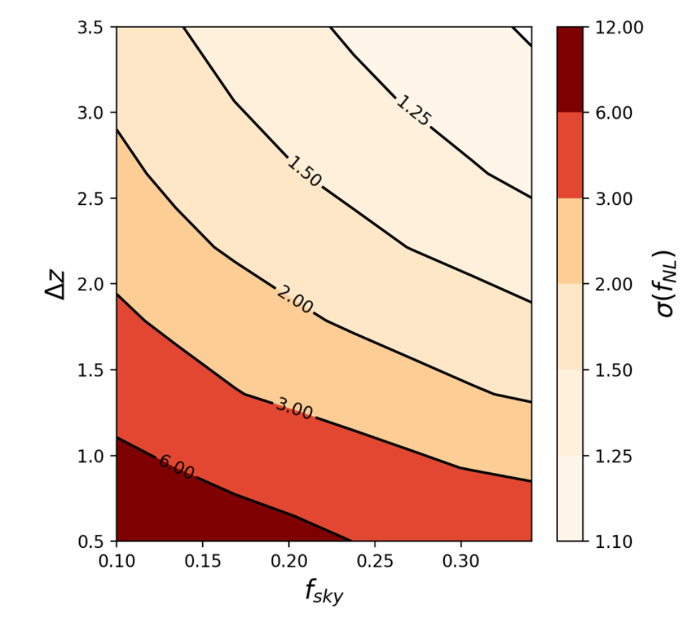
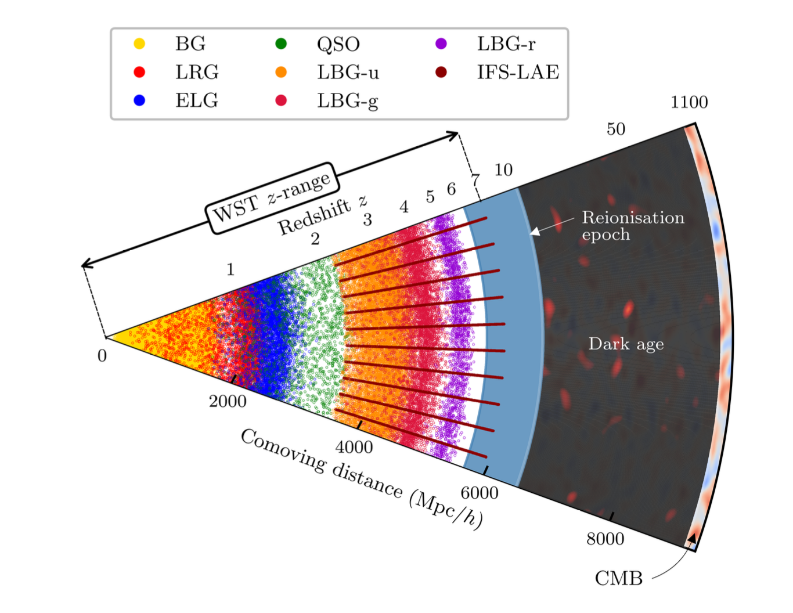

Surveys
I am fortunate to be part of several galaxy surveys, both photometric (taking pictures of galaxy shapes) and spectroscopic (measuring galaxy spectra). On the left, one of my supervisors, Cristobal Padilla, and I, standing next to the Euclid telescope, before its space launch! I also love to see the amazing instruments behind our data.
I dedicate the majority of my time to the Dark Energy Survey (DES) and Euclid. We are currently wrapping up the final analysis of DES. For Euclid, the first data are now arriving (late 2024-2025), and we are beginning to play with them. To prepare the Euclid analysis, we developed and tested codes with the Flagship2 simulation, the largest galaxy-populated simulation to date!
I also work with the Dark Energy Spectroscopic Instrument (DESI), focusing in particular on the upcoming observation of high-redshift galaxies (z > 2).
Lastly, I dedicate the little remaining work time to a project for a future spectroscopic telescope, the Wide-field Spectroscopic Telescope (WST). This telescope, which could begin observations in the early 2040s if funded, would be 50 times more powerful than DESI!
Clustering Redshifts
I described the clustering redshifts technique in detail, on the homepage. I will just recall that in photometric surveys, we take pictures of hundreds of millions of galaxies. As these pictures correspond to images of the galaxies lensed by the matter between these objects and us, with some nice observables (usually two-point correlation functions), we can deduce some properties of the universe such as its matter content. But of course, to do this last step, we need to model our observables. A key ingredient of these models is the redshift distribution of the sample of shapes. As we are taking pictures, we don't know the distances of these galaxies, unlike with spectroscopy, and we need to develop dedicated methods, such as clustering redshifts.
For DES, we have 150 million galaxies with shapes, distributed over 4,000 square degrees. Only limited spectroscopic data are available: BOSS and eBOSS, with several hundred spectroscopic galaxies distributed over 800 square degrees. Thus we also try to extract information from the cross-correlation with photometric sub-samples with qualitative photo-z. The error introduced is taken into account by marginalising over some sets of nuisance parameters. Work in progress !
For Euclid, the first data are just arriving now. Before I was using the Flagship simulation to develop and optimise the pipeline. An article is currently in internal revision.
Survey strategy and forecast for WST and DESI-II
Next Generation of spectroscopic surveys
 Before starting my PhD, I did an internship from March to August 2022 with Jean-Paul Kneib and Cheng Zhao, at EPFL. Jean-Paul and Cheng welcomed me with a very ambitious and complicated subject: do some forecasts for the next generation of spectroscopic surveys, and derive recommendations for the survey strategies. At that time I did not even know what a spectroscopic survey was, and I never heard about DESI!
I did not manage to finish the work before the start of my thesis, and I continued working on it until December. Thanks to my supervisors Marc Manera and Cristobal Padilla for letting me do so. We decided to publish a short article Cosmological Fisher forecasts for next-generation spectroscopic surveys, W. d’Assignies, et al, Monthly Notices of the Royal Astronomical Society, May 2023. It contains some standard forecasts (BAO, RSD, non-gaussianities and neutrino masses) for WST, MSE and Megamapper. This part of the work is not that interesting to be honest, as the design of these surveys is evolving constantly, and the forecasts are quickly outdated.
In my opinion, the most interesting part of the article is the model I developed for the observation of a spectroscopic survey. Given a sky coverage, a redshift range, the exposure time, the desired efficiency, the number of fibres, and the survey duration, I had a pipeline to directly compute the forecasts, allowing for a complete exploration of the survey parameters, to find the optimal survey design and strategy. Here is an easy example of the non-Gaussianity forecast as a function of sky coverage and redshift width. We recover that it is optimal to observe the largest volume possible for fnl, even if the galaxy density is lower (and so the shot noise is larger). The article contains additional plots with less intuitive results.
WST science whitepaper
 After this publication, I went to a conference about one of these future surveys, WST, in Vienna (2021), and I presented my work. I was very impressed by the project (a 12m diameter telescope with 20,000 fibres and an IFS!), and all the different science cases, not limited to cosmology. The size and number of fibres alone make it 40 times more powerful than DESI, which is currently working and providing astonishing data. During this conference, I met Christophe Yeche (CEA), as well as Aurelien Verdier (PhD at EPFL), and we started during the fall to work all together (and Antoine Rocher, a new postdoc at EPFL), on the WST survey design and some forecasts for a first version of the WST whitepaper. The WST cosmology group was later joined by many more, with additional cosmological science cases (voids, clusters, FGRB, GW). After some months of intense work (with personally an additional internship at EPFL), a huge white paper (194 pages) was produced: The Wide-field Spectroscopic Telescope (WST) Science White Paper, V. Mainieri et al, arXiv, March 2024. See for example the plot of the different galaxies samples, as a function of redshift, that would be observed with the proposed survey. The good news is that WST received funding thanks to this white paper, for a 3-year concept study. I am currently working on some new ideas of measurement for cosmology with the WST IFS (which is a -new- instrument for cosmology, and can only be used with a WST-like telescope)!
DESI-II and high-redshift target selection
After our work on WST, Christophe offered to work a bit more with him and his postdoc, this time for DESI-II, which would be a follow-up survey of DESI, and the first to explore the high-redshift universe. Constantin designed a method with random forest techniques, to efficiently target Lyman-Break-Galaxies, which represent a very interesting tracer at high-redshift. The challenge is to know where to point the fibres in the sky: we need some candidates, and a target selection, based on photometric observations. The method they developed was tested with some real DESI observations of a small sample of these LBG, which is very exciting! All the credit goes to Constantin and Christophe, I just did the forecasts to prove that we can effectively do science with the observations of these galaxies. Our work High-redshift LBG selection from broadband and wide photometric surveys using a Random Forest algorithm, C. Payerne et al, arXiv, September 2024, is available online.
Intrinsic Alignment around voids
 As part of my first year of Master of Physics at ENS, I did a six-month research internship from January to June 2020 with Elisa Chisari in Utrecht. In reality, I only finished working on the subject in 2021!
As part of my first year of Master of Physics at ENS, I did a six-month research internship from January to June 2020 with Elisa Chisari in Utrecht. In reality, I only finished working on the subject in 2021!
Elisa is maybe the highest specialist in the world, on the aspect of intrinsic alignment. Intrinsic alignment refers to the local orientation of galaxies to dense environments, notably due to tidal forces (there are additional effects, cf. TATT model). As seas on Earth tend to elongate the Earth towards the moon, gravitational forces can squeeze galaxies. Understanding this effect is crucial as we are using the orientation of galaxy shapes to constrain the physics of the Universe. We need to take into account all the effects that are significantly contributing to our observables.
Usually, we think of IA as what I just said: galaxies are elongated in the direction of dense structures. Elisa had the intuition that the opposite should also happen: galaxies should be elongated in the opposite direction of underdense structure (so kind of compressed). Indeed these underdense structures, cosmic voids, can be physically treated as structures with a negative effective mass (relative to the mean density of the universe, exactly as the problem of a charged ball with a cavity in electromagnetism). She supervised me, while I was modelling this effect, and trying to measure it with data. Our voids sample is limited to a few thousand, the uncertainty we got was too large to claim a detection, even if visually it seems to be there (detection at 1.5 sigma...). If anyone wants to redo this with future data, please do so !! Our results are presented in a small article Intrinsic alignments of galaxies around cosmic voids, W. d'Assignies et al,Monthly Notices of the Royal Astronomical Society, January 2022.
The AGILE project
In 2021, I joined a NASA project focused on developing a new telescope: AGILE.
The Advanced Energetic Ion Electron Telescope (AGILE) project aims to create a compact instrument for measuring the intensities of charged particles and ions in space. The telescope consists of three layers of fast silicon sensors and custom electronics. It’s designed to identify a wide range of elements, from hydrogen (H) to iron (Fe), and measure energies from 1 to 100 MeV per nucleon.
As part of the project, I contributed to the code development for powering the instrument. This included writing procedures to (slowly) power on the detectors, incorporating feedback from sensors, and implementing fast power shutdowns in case of temperature anomalies. I also helped with the assembly and testing of the telescope, using specific radioactive sources for calibration. I worked closely with Florian Gautier, Alexander Novikov, and Christophe Royon during this project, which resulted in several publications, such as
As a side project, with Alexander Novikov, we used a very similar electronics to create a compact muon detecor. With 15 minutes of observation, we got c=296 (+/- 5) 10**3 km/s!
Previous reasearch projects
At the beginning of my Master’s, I was fascinated by hydrodynamics, particularly the beauty of turbulent flows. I had the chance to work on two cool experiments during this time.
Double diffusive turbulent plum
The first one was in July 2019 at IRPHE in Marseille, under the guidance of Michel Le Bars. He tasked me with studying the dynamics of a double-diffusive turbulent plume. The setup involved a large volume of water at rest, into which water was injected at high speed (the speed difference being the first “diffusive”). This injected water also had a different density because it was salty (the density difference being the second “diffusive”). In a standard single-diffusive injection, the plume forms with universal angles (cf. ...). My work focused on how these angles changed as a function of density differences, uncovering a nonlinear response. I also measured an increase in vorticity induced by the density contrast.
Tornado project
From September to December 2019, while juggling my first year of Master’s coursework, I worked with Christophe Gessinger on an exciting project. He wanted me to explore potential experimental setups to isolate the different components of stochasticity in a turbulent flow. This was all within the context of the energy cascade of turbulence: the transfer of energy from large-scale motions to small scales. While we can measure and predict the energy spectrum of turbulence (e.g. Kolmogorov’s cascade), there’s no experiment that clearly shows how large-scale modes are converted into small-scale ones.
Admittedly, this goal was too ambitious for an internship (or even a PhD!), but we managed to create some really interesting experimental setups. After many trials, we found a way to generate stable vortices by injecting accelerated water around holes. With this setup, we could study the dynamics of two interacting vortices. We observed some intriguing nonlinear dynamics.
 Unexpectedly, while analyzing the setup more closely, we noticed surface wave propagations on the vortex. This led us to tweak the setup to focus specifically on these waves, using a single, larger vortex. The result? Stunning images of what we interpreted as Kelvin waves with different modes m.
Unfortunately, I wasn’t able to get measurements robust enough to publish. But I now have a hard drive full of beautiful videos of swirling vortices and waves.
Unexpectedly, while analyzing the setup more closely, we noticed surface wave propagations on the vortex. This led us to tweak the setup to focus specifically on these waves, using a single, larger vortex. The result? Stunning images of what we interpreted as Kelvin waves with different modes m.
Unfortunately, I wasn’t able to get measurements robust enough to publish. But I now have a hard drive full of beautiful videos of swirling vortices and waves.